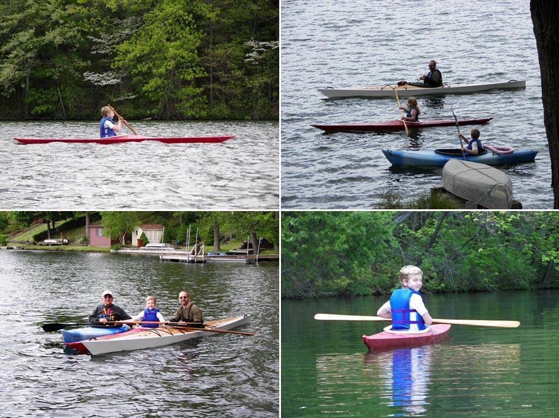

| (New) Sea Flea by Steve Castellano (US) | Menu Previous Page Next Page |
|

Jonathan (age 11) and Grace Ann (age 10) from Metuchen, New Jersey, paddle the Sea Flea they and their dad Steve have just completed. This is the first of two such boats to be constructed. The second one is 35% complete. Both use aluminum stringers. The picture at the lower left shows three generations of Castellano's on the water. Steve is paddling his CLC Chesapeake 17LT which is entering its third season.
|
|